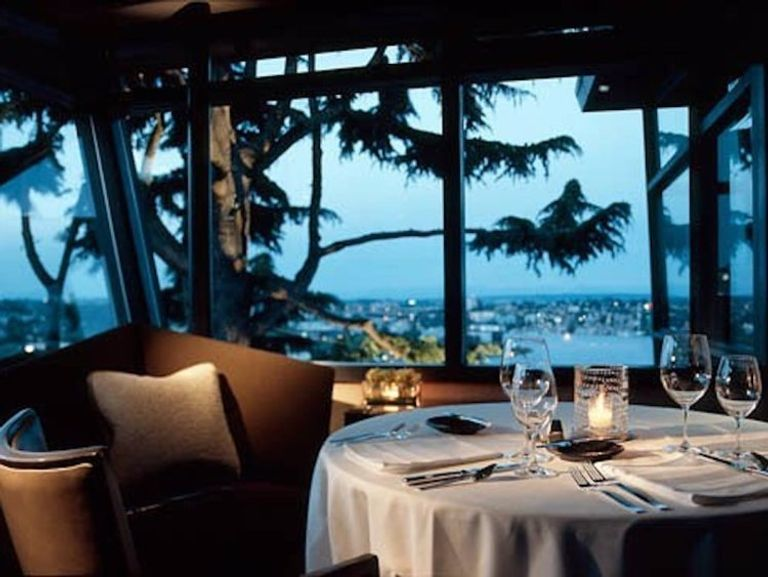
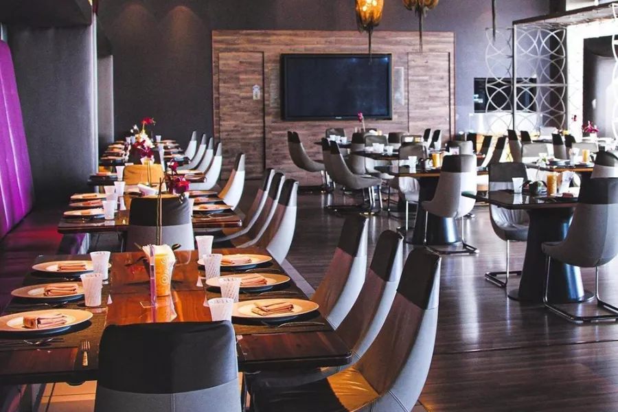
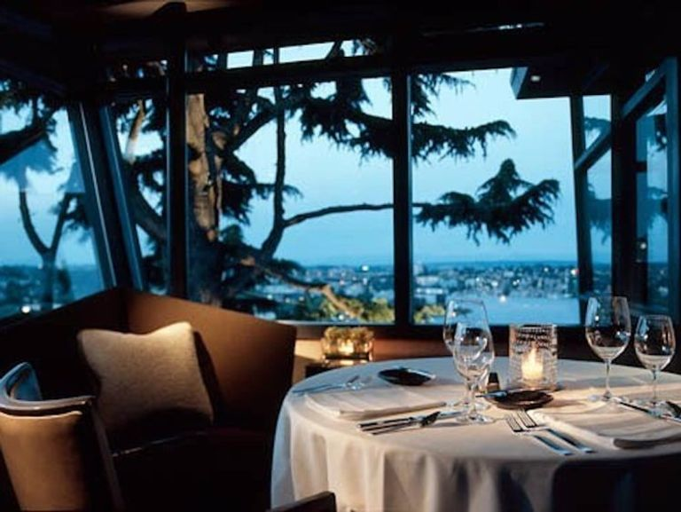
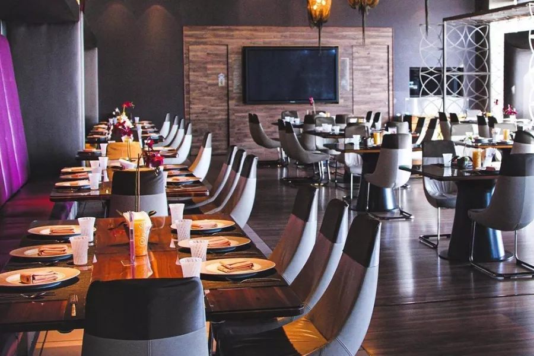

(BAYAN RESTAURANT)
Bayan Restaurant is one of the largest and most famous restaurants in Palestine. It is located northwest of Jerusalem in the town of Beit Surik on Royce Street. The restaurant offers several quick meals, including pizza, shawarma, and crispy chicken, in addition to cold and hot drinks.
 



To go to a page index.html click here
index.htmlTo go to a page contact.html click here
contact.htmlTo go to a page login.html click here
login.htmlTo go to a page menu.html click here
menu.htmlTo go to a page register.html click here
register.htmlTo go to a page wishlist.html click here
wishlist.html